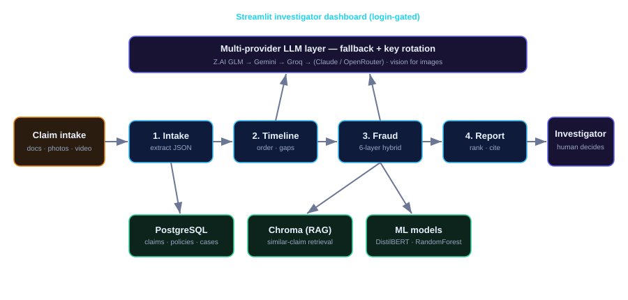
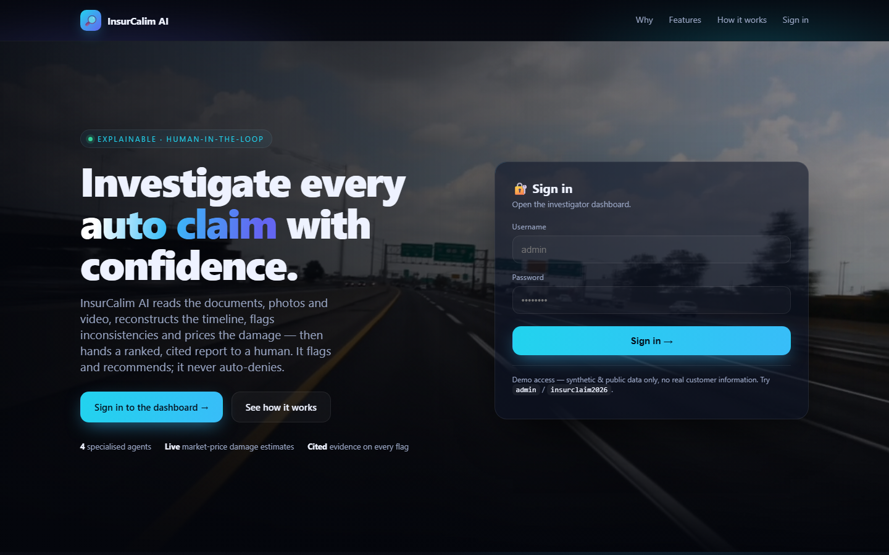
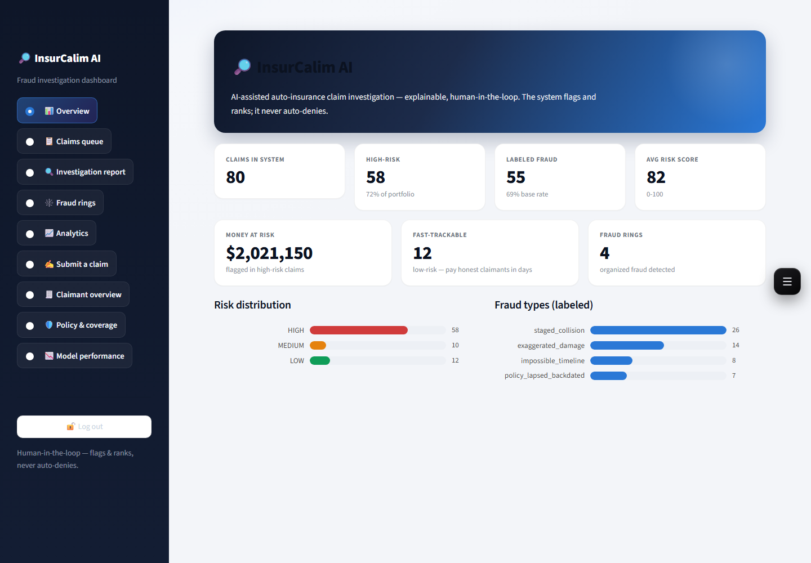
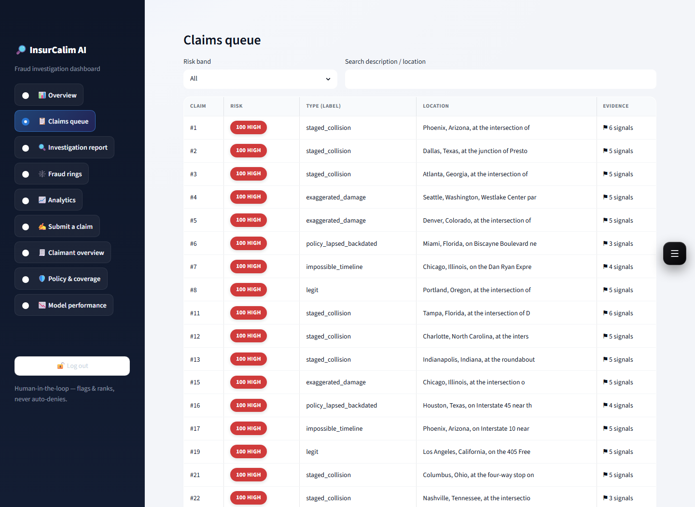

A multi-agent platform that reads a claim's documents, photos and video and produces a ranked, cited, human-in-the-loop investigator report.
Presented by Kasaam Ali · Final-year project review · July 2026
Every claim arrives as a pile of documents, photos and videos an adjuster must read, cross-check and price — by hand, millions of times a year.
Fraud is now supercharged by AI-generated fake images, medical reports and valuation certificates that legacy tools were never built to catch.
Re-keying data into legacy systems limits growth and delays honest payouts to real customers.
Black-box scores can't be justified to a claimant or a regulator — insurers need an explanation, not just a number.
~$900 per year — the hidden fraud tax on the average US consumer's premiums.
Sources: Coalition Against Insurance Fraud; Insurance Information Institute. [1][2]
AI in claims processing alone is forecast to grow from $0.46B (2025) to $0.97B by 2030 (16.2% CAGR).
Sources: Fortune Business Insights; Mordor Intelligence; GlobeNewswire. [5][6]
| Player | What they did | Result |
|---|---|---|
| EY (Nordic insurer) | Document Intelligence (OCR + NLP) | 70% auto-extraction |
| PwC (auto insurer) | Explainable-AI damage assessment | 29% efficiency savings |
| McKinsey / Aviva | 80+ AI models, human-in-the-loop | £60M saved (2024) |
| Shift Technology | Fraud & underwriting detection | $30M+/yr risk mitigation |
| AWS / EXL | GenAI underwriting on Bedrock | −80% underwriting cost |
| Lemonade | AI-native claims ("AI Jim") | ~3-second settlements |
InsurCalim AI applies the same patterns — document intelligence, explainability, human-in-the-loop. [3][7][8][9][10][11]
A LangGraph state machine: intake → timeline → fraud → report.
TXT, PDF, DOCX, images and video, with vision-OCR for scanned PDFs.
Rules, photo hashing, ML, RAG, narrative red-flags, deepfake media.
Checks policy coverage and that every required document is present.
Judges whether the demanded cost is fair — even when it isn't fraud.
Weighted reason codes + citations. It never auto-denies.
A shared ClaimState flows through the agent graph; the human always makes the final call.
Hard signals: impossible timelines, lapsed/back-dated policies.
Perceptual hashes catch reused or recycled damage photos.
DistilBERT + Random Forest trained on 30k real tabular rows.
Retrieves past known-fraud claims that resemble this one.
Reads the whole file for cross-document contradictions.
Flags AI-generated fake images and documents.
Demanded: PKR 850,000
Fair estimate: ~PKR 95,000
Front bumper ≈ 21,000 · paint ≈ 18,000 …
⚠ Overstated 🌐 priced from market
The risk score breaks down into named contributions — you see why.
Every flag carries its evidence and the policy clause it relies on.
The system flags and ranks; a human investigator makes the final call.
💬 Built-in AI chat — grounded, per-claim follow-up questions for the investigator.

A resilient multi-provider LLM layer powers extraction and reasoning; Postgres, Chroma (RAG) and the ML models support the agents; everything is served through a login-gated dashboard.
Multi-provider fallback + key rotation means no single vendor outage stops the pipeline — and it runs at near-zero cost on free tiers.



| Model tier | Cost / claim | Per 1,000 claims | Catches contradictions? |
|---|---|---|---|
| Free tier (Z.AI / Groq) — today | ~$0.00 | ~$0 | Basic |
| Gemini 2.5 Flash | ~$0.02 | ~$20 | Good |
| Hybrid — Flash + Claude Sonnet (recommended) | ~$0.07 | ~$70 | Strong ✓ |
| All Claude Sonnet / Opus | $0.15 / $0.25 | $150 / $250 | Strongest ✓ |
The ROI: analysing a claim costs cents; catching one inflated or fraudulent claim saves thousands — an order-of-magnitude return.
Sources: Google Gemini pricing; Anthropic Claude pricing. [12][13]
Full pipeline, multi-format intake, 6-layer fraud, amount pricing, claimant overview, explainable report, AI chat.
PostgreSQL + Chroma stores; ML trained on 30k real tabular rows; synthetic & public data only — no real PII.
React landing page with single sign-in into a login-gated Streamlit dashboard.
Runs on free LLM tiers today; scales up to paid, higher-accuracy models only where ROI justifies it.
Move the primary path to a higher-accuracy model for production reliability.
AWS (RDS · S3 · ECS) so an insurer can pilot on real infrastructure.
Validate accuracy and fraud-catch rate on a partner's permissioned historical claims.
Output-consistency controls, audit logging, and role-based access for teams.
Thank you — questions welcome.
Synthetic & public data only · no real customer information · decision support for a human investigator, not an automated decision.